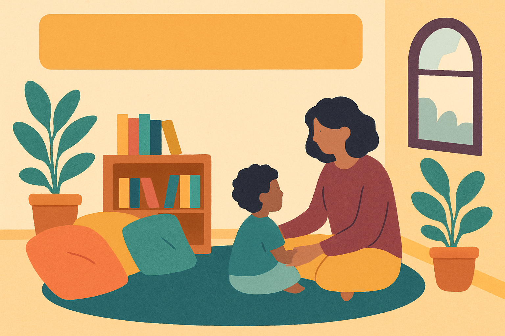

← Weekly Insights · August 17, 2026
Understanding Childhood 'Lies'
When children bend the truth, it often signals fear, not failure.

An illustrative, composite scenario — not a real named incident. Educational content only; not medical or legal advice. For diagnosis or support, consult qualified professionals.
"Lila" told her teacher she finished her drawing when it was barely started, worried about getting in trouble for taking too long.
At home, "Lila" said she didn’t spill her juice, even though the cup was knocked over, anxious about angering her parents.
Behaviour is communication
Instead of seeing "lying" as a moral failing, consider it a coping strategy when children feel unsafe or overwhelmed.
What was likely really going on
Fear of Consequences
Children often lie to avoid punishment or disappointment, not because they want to be deceitful.
Developmental Understanding
Young children are still learning about truth, imagination, and social expectations, which can blur their stories.
Lack of Trust or Safety
If children don’t feel emotionally safe, they may hide the truth to protect themselves from negative reactions.
What could have helped
Reggio Emilia: Create a Safe Environment
Design spaces where children feel respected and heard. When kids see they won’t be harshly judged, they are more honest.
Montessori: Freedom Within Limits
Give children gentle choices and clear, consistent rules. This builds their confidence to tell the truth without fear of harsh consequences.
Early-childhood practice: Regulate First, Teach Second
Focus first on calming children’s fears through soothing words and steady presence before discussing honesty and truthfulness.
Try this at home & school
- Notice when children avoid telling the truth and respond calmly.
- Ask gentle questions that show you want to understand, not punish.
- Set clear and kind expectations about honesty and its importance.
- Model honesty yourself in everyday moments.
- Praise efforts to tell the truth, even if it’s difficult.
Building Trust Through Understanding
If you're supporting a child like this, our neurodiversity strategies and free guides are a good next step — or send us your situation.
Get the weekly insight
One short, practical read each week on what’s really going on beneath children’s behaviour — and what actually helps. Free. Unsubscribe anytime.